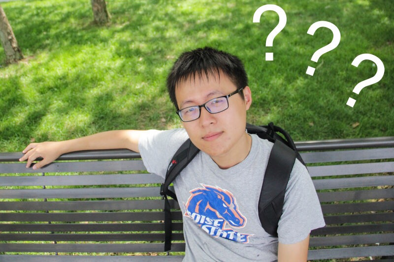

Haofeng Zou
Graduate Student at
Carnegie Mellon University
Email: zhfthss
at gmail
dot com
Phone: (+1)412-983-3013
Address: 340 Eckstein Pl, Pittsburgh, PA 15213
Education
M.S. in Information Networking, Carnegie Mellon University, 2016 - Expected 2018.
B.S. in Computer Software, Tsinghua University, 2012 - 2016.
Experience
Microsoft Research Asia, Jan - Mar 2016
- Developed a Java application that can learn specific string generation format from given example input-output pairs and autogenerate
desired strings given new datasheet.
- Investigated several parser tools of different languages including JavaScript, PHP and R.
Microsoft Research Asia, Sept - Nov 2015
- Built the code analysis system by C that extracted API information from project codes using Clang and LLVM tools.
- The project was later adopted into a larger system of MSRA.
- Gained experience in building up code analyzing systems and using compiler tools.
Multimedia Research Lab, Tsinghua University, June 2015 - June 2016
- Assisted in developing an object detection system that supports object locating, recognizing and labeling based on Faster R-CNN
using Caffe deep learning framework and Python interface.
- Improved detection accuracy from 73.2% to 80.4% in PASCAL VOC 2012 dataset.
- Participated in TRECVID Instance Search contest and designed a retrieval process based on deep learning methods.
Projects
XV6 Operating Systems GUI Implementation
- Provided mouse/keyboard support for a tiny OS XV6 by implementing mouse driver supporting clicking, dragging and moving
motions using C language.
- Implemented a GUI rendering library for user applications offering various services as picturing mouse, windows, icons, pictures and
characters.
- Got the highest score (97/100) among all implementations in the course of Operating Systems.
Online Interview and Programming System
- Designed an online interview and programming website that provided real-time interviewing, coding and communication using
Backbone, Socket.io and mongoDB.
- Implemented user interface based on Backbone framework by JavaScript. Utilized Socket.io for real time message alerts and
efficient data transmission between user interface and back-end database.
- Passed an online test with 50 people interviewing simultaneously.
A Picture to Music Application
- Designed a Java application to transform an input picture into piano music corresponded to the picture's artistic conception by using
algorithms like Markov Random Chain to generate the rhythm, harmony and pitch of the song.
- Won the Second Prize in 2014 Challenge Cup Contest of Tsinghua University.
Skills
- Java, C/C++, JavaScript, CSS, HTML
- Matlab, Assembly, Python, C#, ASP.Net, PHP
Awards
- Tsinghua Excellent Graduates, 2016
- Tsinghua Hengda Scholarship, 2015
- Tsinghua Tung-OOCL Scholarship, 2014
- Second Prize in the 32nd Tsinghua Challenge Cup Contest, 2014
- Tsinghua Academic Excellent Scholarship, 2013